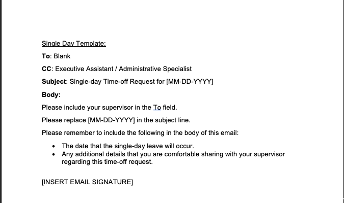
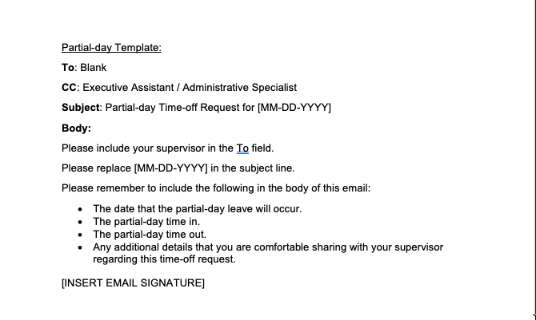
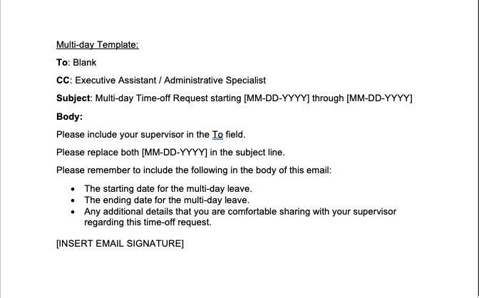
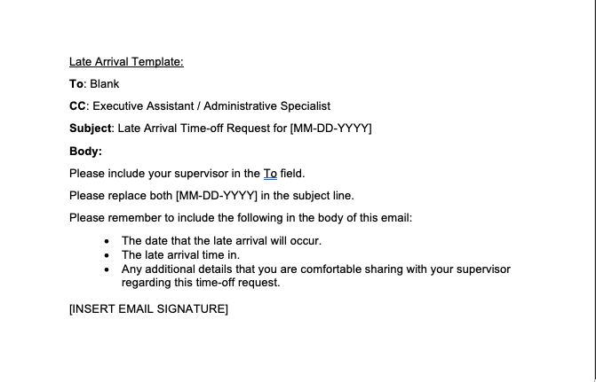
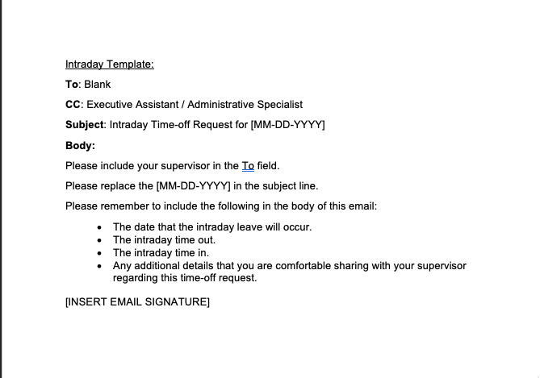
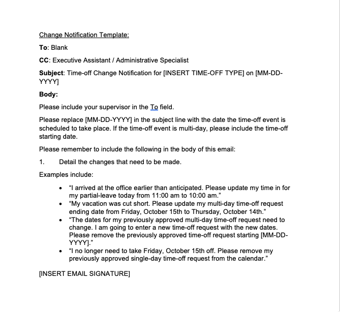

Creating a Process for Time Off Requests
One of the things I like most about my work is participating in a wide variety of business processes. From
managing employee onboarding to procurement, and everything in between, an Executive Assistant is
responsible for interacting with these processes to bring significant business needs to the finish line.
Executive Assistants are also uniquely positioned to offer creative ways to improve the procedures if the
environment permits.
Sometimes, business processes exist informally without set guidelines, with everyone having more or less the
same goal in mind. For example, in my experience, requesting time off falls into this informal business
process category. Of course, the goal is to take time off, but getting there does not have a defined
process. The informal process looks something like this:
1. Time off need comes up.
2. Create a new email detailing the time off request.
3. Send the email to their supervisor so they can review it and provide an outcome.
4. Add time off request to the calendar.
This process is pretty simple, right? It probably sounds a lot like what you're doing! In my case, there is
an extra step. The Administrative Specialist has permission to edit the calendar, so they need to be
included in the email to update the calendar. Adding the Administrative Specialist to the email is where our
informal time off request process was breaking.
Should the Administrative Specialist be added to the initial request, or should they be added to the email
only after the supervisor approves? When should the Administrative Specialist be added if an already
approved time off request needs to change? These are just a couple of relevant questions that come up.
Questions like this can confuse, and in some cases, the confusion ends up causing the Administrative
Specialist to be left out entirely.
In my opinion, there are other problems with this informal process. Without standardized time off request
subject lines and email body details, it makes searching for previous time off requests in your email client
more challenging. Ultimately, email clients should not serve as repositories for such requests, but it
appears that this is the reality in most business settings.
There is a definite need for some experimentation with a formal time off request process. Perhaps my
approach to this could serve as a framework for a similar system in your working environment! Below are the
results of a day or two trying to figure out a way to do this. It's a good start, but ultimately I would
like to automate this fully.
Step 1: Create a flowchart detailing the steps involved in the time off request process.
Step 2: Create email templates for each time off request type. The email templates automatically add
the Administrative Specialist in the CC field. I cannot upload the templates to this blog post, so I
included the text below. If you've never used Outlook templates before, visit this
website to learn more about them.
Here is a YouTube video
demonstrating how to create email templates in Outlook.
Flowchart
Click image to download it, or right click and open in new tab to zoom in:

Outlook Email Templates:






The flowchart and email templates can live in a centralized location on your shared drive for everyone to
access.
I hope this helps.
Cheers to continued experimentation and hopes of more efficient and productive procedures and workflows for
everyone!
Until next time,
Eric